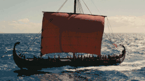
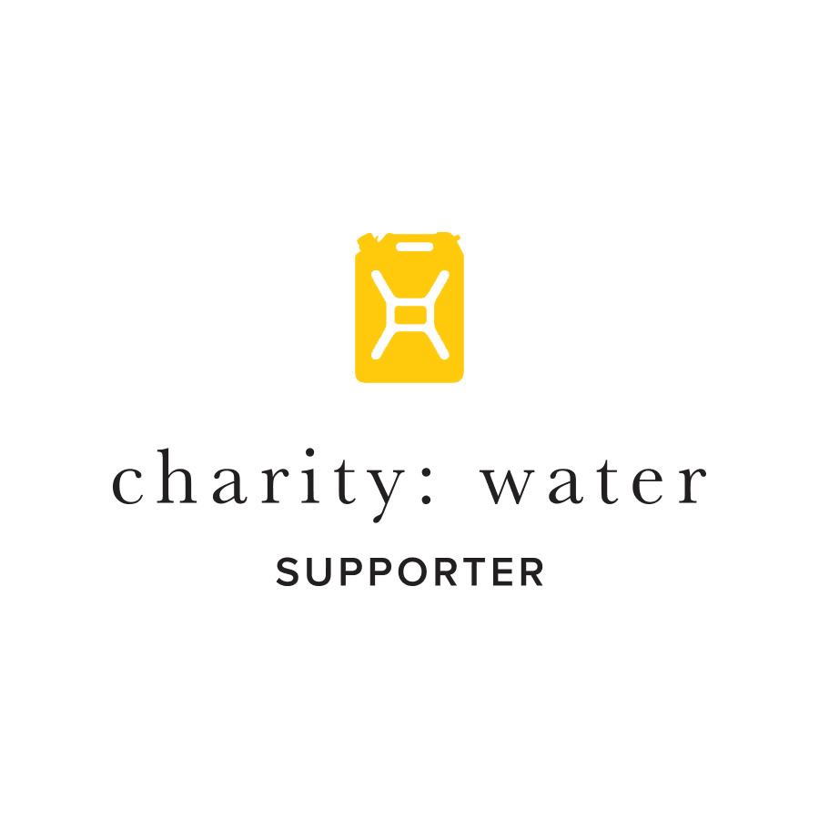
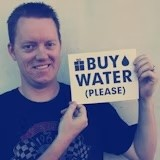
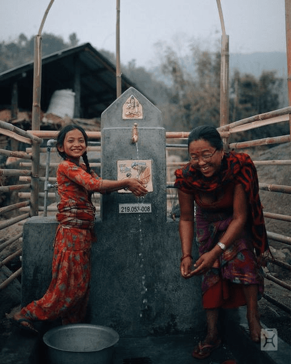
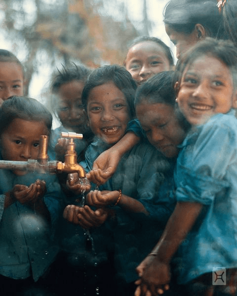

James' Birthday Odyssey '26
This year I'm setting sail for clean water, inspired by the epic tale of Homer's Odyssey. My years long voyage is worth it when it ends with someone getting access to clean water for the first time in their lives.


Why water?
When I first heard Scott's story of founding a different kind of charity where 100% of the donations go to clean water I was fascinated.
I learned how water is the key to unlock better health, improve education, and sustained prosperity worldwide.

How it started…
In 2009 I was at a marketing conference for work when something completely unexpected happened.
Scott Harrison, founder of Charity:Water told us about the amazing shift his life took. He went from a successful indulgent nightclub promoter, to a dedicated, compassionate leader working tirelessly for the benefit of people across the planet.
After hearing the passion in his voice, and the huge impact that a simple resource like water can have on the quality of life of so many people, I had to get involved. Each year since 2012 I have used my birthday as a great reason to raise money for clean water.


How it's going…
Over my previous birthdays we have provided more than $8K for new clean water sources to many communities, see the links below for the receipts. Locations include Bangladesh, Burkina Faso, Madagascar, Malawi, Rwanda, Niger, and Ethiopia.
No money goes to overhead, its all used in water projects. You can see exactly where it goes, click a link to see the impact:
- In 2012 we raised $372
- In 2013 we raised $440
- In 2015 we raised $434
- In 2016 we raised $605
- In 2017 we raised $420
- In 2018 we raised $600
- In 2019 we raised $416
- In 2020 we raised $930
- In 2021 we raised $958
- In 2022 we raised $834
- In 2023 we raised $915
- In 2024 we raised $952
- In 2025 we raised $512
So you have raised $8,388 for clean water around the world!
Thank you!!!!!!
Seeing you all help change the world is my favorite gift.